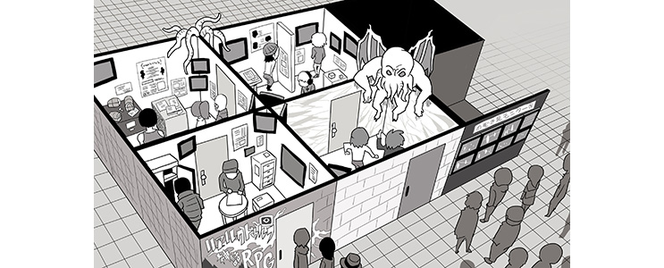

TRPG的全名是「Tabletop Role Playing Game」，中文通俗翻譯「桌上角色扮演遊戲」；而這「TRPG」僅僅只是一個遊戲的分類統稱，而非指單一遊戲。
如同「球類運動」這一分類統稱，底下有足球、棒球、籃球等；「TRPG」這一統稱下也會有不同遊戲如Call of Cthulhu（CoC、克蘇魯的呼喚）、Dungeons & Dragons（DnD、龍與地下城）等；而這些不同遊戲通俗習慣以「系統」做稱呼。
也因為不同「系統」是不同遊戲的關係，所以無法一概而論是否有統一的進行方式、準則、玩法等。
但在大多數的情況下，一場TRPG的遊戲，會是約三到六人圍成一桌（或是使用任何通訊媒介），拿著紙、筆與「規則書」，其中一位成員擔當「主持人」、而其他人擔當「玩家」。
玩家扮演各自的角色、而主持人則描述架構世界與處理玩家種種動作造成的結果，同時所有人依循規則書的規則與指示來進行，共構出一場可能是各種各樣、可能是恐怖離奇、又或是冒險屠龍的故事。
克蘇魯的呼喚，英文「call-of-cthulhu」簡稱ＣＯＣ，為桌上型角色扮演遊戲。由ＫＰ(Game-keeper)或稱ＧＭ(me-master)帶領著1位以上的玩家所扮演探險者所組成。遊戲的宗旨在於角色扮演，隨著各劇本的不同有各種遊戲目標。遊戲中有趣的部份並不是達成最終目標，而是在遊戲過程中享受扮演和自己現實中完全不一樣的腳色，你可以扮演一個1920年代美國黑手黨，也可以扮演一個現代的職業偵探，遊戲的靈活性指受限於你自己的想像力。
